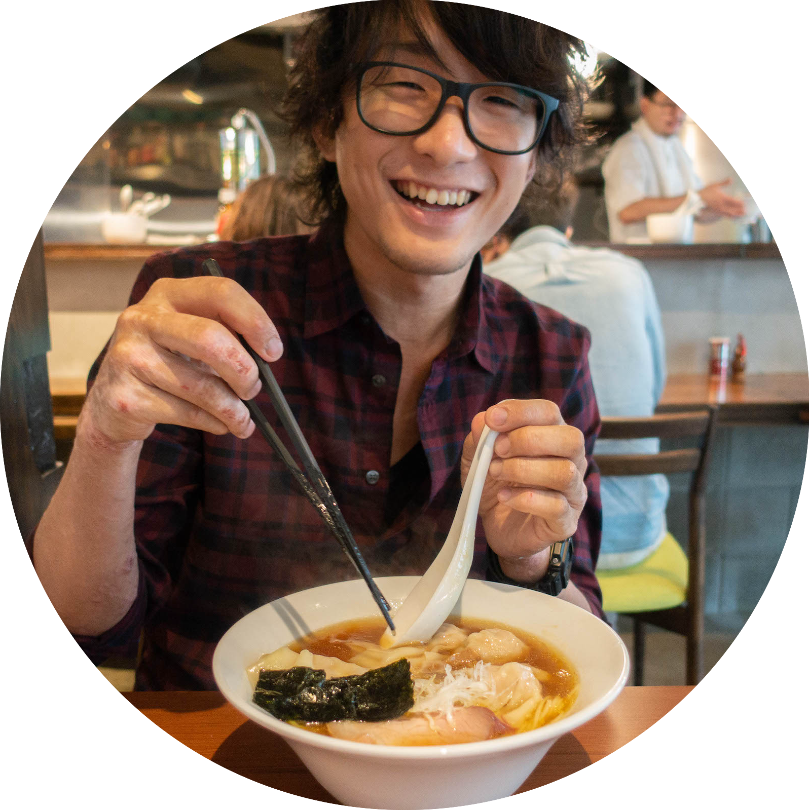

TAKUMA
INOUE
医療の現場からITへ。
人と業務を整えて前に進める仕事をしています。
精神科病院で作業療法士として働いたあとITの世界へ移りました。
現在はITコンサルタントとして企業の業務改善やAI活用の推進を支援しています。
現場で感じたのは「情報が共有されない」「手作業に時間が取られる」という課題でした。
それが今の仕事の出発点になっています。
プロフィール

| 名前 | 井上 拓磨 |
|---|---|
| 生年月日 | 1992年12月28日 |
| 出身 | 埼玉県 飯能市 |
| 趣味 | バスケ |
| カメラ |
大切にしていること
私が大切にしているのは人とのつながりです。
仕事で成果を出すことは大切です。
ただ仕事だけに偏るのではなく人生全体として豊かさを感じられる環境をつくりたいと考えています。
私にとっての豊かさとは社会的にも精神的にも余白がある状態です。
自分のやりたいことを実現できること。
信頼できる人とのつながりがあり困ったときには支え合えること。
新しいことに挑戦するための時間と気持ちの余裕があること。
沖縄での生活。医療現場での仕事。IT企業の立ち上げ初期から組織の成長に関わる経験。
そこで学んだのは人との信頼関係と相手の立場を理解することの大切さでした。
これからは知識や経験を持っているだけの人ではなく、周囲から信頼され期待された成果を出せる人でありたい。
仕事に限らず関わるすべての人を幸せにできる人を目指しています。